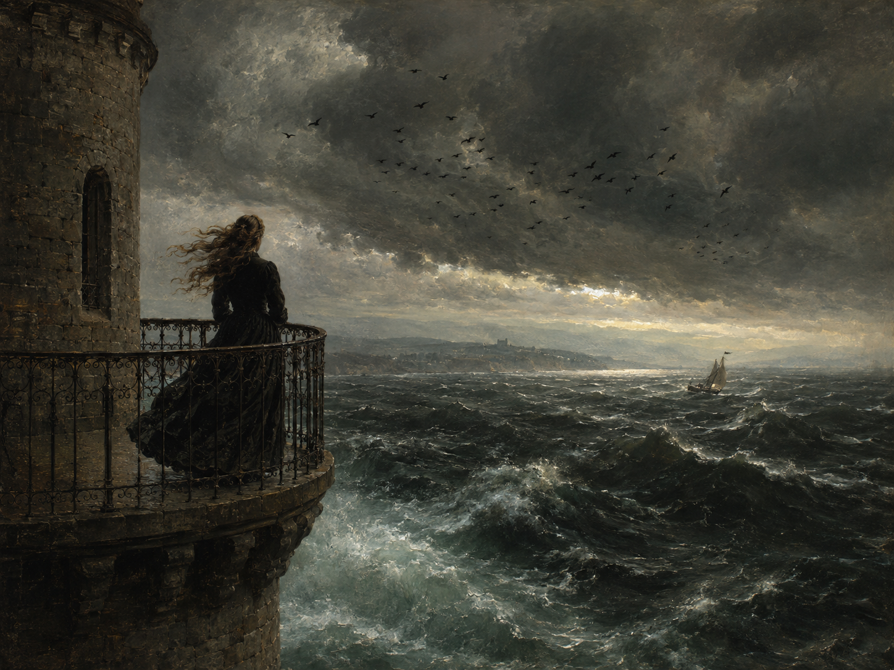

Ich steh’ auf hohem Balkone am Turm,
全诗以第一人称直陈开篇。Balkone 是带旧式第三格词尾 -e 的形式（今作 Balkon）。此塔即博登湖畔梅尔斯堡城堡东北角的礼拜堂塔楼，德罗斯特1841—42年住在其中的圆形塔房。原刊标题写作 "Am Thurme"（旧拼法）。
在塔上
《诗集》（1844年版）·「岩、林与湖」（Fels, Wald und See）组诗
毕德麦耶 / 复辟时期（今学界多不作断代归类） · Biedermeier / Restaurationszeit (heute meist keiner Epoche eindeutig zugeordnet)
1841/42年冬春间作于梅尔斯堡，1842年8月25日首刊于《为受教育读者的晨报》（Morgenblatt für gebildete Leser）

图片由 AI 生成
Ich steh’ auf hohem Balkone am Turm,
全诗以第一人称直陈开篇。Balkone 是带旧式第三格词尾 -e 的形式（今作 Balkon）。此塔即博登湖畔梅尔斯堡城堡东北角的礼拜堂塔楼，德罗斯特1841—42年住在其中的圆形塔房。原刊标题写作 "Am Thurme"（旧拼法）。
Umstrichen vom schreienden Stare,
Umstrichen 是 umstreichen（绕飞、盘旋掠过）的第二分词，作前置的分词短语修饰"我"。der Star（椋鸟，复数 Stare）在此为集合性单数。注意 Star 另有"白内障"与"明星"两义，须靠语境判断。
Und laß’ gleich einer Mänade den Sturm
die Mänade（迈那得斯）是希腊神话中狄俄尼索斯的狂女信徒，以披发狂舞、忘我癫狂著称——这个比喻在19世纪一位天主教贵族女性笔下极为大胆。gleich + 第三格意为"像……一样"（今多说 wie）。lassen 在此为使役动词，其不定式宾语 wühlen 在下一行。
O wilder Geselle, o toller Fant,
两个呼语都是对风暴的拟人化，且都用了男性称谓。der Geselle 本义为"帮工、伙计"，引申为"家伙"；der Fant 是古语，指轻浮傲慢的年轻男子（"毛头小子"），今已罕用。诗人把风暴设想为一个可以搏斗的男性对手。
Und, Sehne an Sehne, zwei Schritte vom Rand / Auf Tod und Leben dann ringen!
Sehne an Sehne（筋腱贴着筋腱）是身体贴身角力的描写；auf Tod und Leben 为固定搭配，意为"生死相搏"。"离边缘两步"点明这场想象中的搏斗就在坠落的危险边上进行。
Wie spielende Doggen, die Wellen
die Dogge 指獒犬类大型犬（如大丹犬）。把波浪比作嬉闹的大狗，是全诗最生动的一处比喻；下一行的 Geklaff（吠叫声）与 Meute（猎犬群）延续了这一犬类意象群，直到第14行"跳进那狂吠的群兽里"。
Sich tummeln rings mit Geklaff und Gezisch,
sich tummeln（欢腾、来回奔跑）为反身动词。das Geklaff 与 das Gezisch 都是以 Ge- 前缀构成的集合名词，表示持续、杂乱的声响（吠声一片／嘶嘶声一片）——这是德语中一个能产的构词模式（Gerede 闲话、Geschrei 叫喊声）。
Und jagen durch den korallenen Wald / Das Walroß, die lustige Beute!
珊瑚森林与海象都是博登湖里绝不可能有的东西——这两行明确暴露了全诗的"体验虚构"性质：所写并非真实所见，而是想象中的越界。korallenen 是形容词 korallen（珊瑚的）的变格形式。Walroß 为旧拼法（今作 Walross）。
Seh auf und nieder den Kiel sich drehn / Von meiner luftigen Warte;
der Kiel 本义为船的龙骨，此处提喻整条船。die Warte 指瞭望台（同源词 warten 原义"守望"）；"我这高踞风中的瞭望处"再次强调说话者只能"看"而不能"去"的位置。drehn 为 drehen 的省音形式。
Wär ich ein Jäger auf freier Flur,
第四节连用两个不带 wenn 的虚拟条件句（Wär ich …），动词置于句首——这是德语条件从句的一种省略形式。全诗前三节的"möchte（我想要）"到这里变成了"wäre（假如我是）"，愿望的对象从行动转为身份，语气随之从亢奋转为苦涩。
Ein Stück nur von einem Soldaten,
"哪怕只是一个士兵的一小块"——这一夸张的自贬是全诗最尖锐的一句：说话者甚至不敢奢望成为完整的男性角色。nur 的位置（后置于 Stück）加强了让步语气。
So würde der Himmel mir raten;
主句用 würde + 不定式的第二虚拟式（Konjunktiv II），与前两行的条件句配套。jemandem raten 意为"给某人出主意、指点"；这句话的潜台词是：只要我是个男人，连老天都会站在我这边。
Nun muß ich sitzen so fein und klar,
nun（如今）把语气从虚拟拉回现实。fein und klar 在此指"举止得体、仪容洁净"，是当时对贵族女性的规范用语；muß 为旧拼法（今 muss）。
Und darf nur heimlich lösen mein Haar, / Und lassen es flattern im Winde!
全诗收束于一个极小的动作：偷偷解开头发。这与第一节里"任风暴在飞扬的头发中翻搅"形成呼应——首尾都是头发，但一处是狂放的想象，一处是仅存的、必须"偷偷"进行的自由。近年的研究据此认为，全诗真正的言说时刻其实始于这个解发动作，前面的一切都发生在想象之中。
| Infinitiv | Präsens 3. Sg. |
Präteritum | Perfekt | Partizip II | Konjunktiv II | Hilfsverb |
|---|---|---|---|---|---|---|
| stehen | steht | stand | hat gestanden | gestanden | stünde / stände | haben |
| ↳ 诗中第一人称省音形式 steh’（今 stehe）。 | ||||||
| lassen | lässt | ließ | hat gelassen / hat … lassen | gelassen / lassen | ließe | haben |
| ↳ 诗中两次作使役动词（laß’ … wühlen；lassen es flattern），此时不定式不带 zu，完成时用"替代不定式"（hat … wühlen lassen）。 | ||||||
| sich tummeln | tummelt sich | tummelte sich | hat sich getummelt | getummelt | tummelte sich | haben |
| ↳ 反身动词，意为"欢腾、来回奔跑"；诗中主语为 die Wellen。 | ||||||
| ergreifen | ergreift | ergriff | hat ergriffen | ergriffen | ergriffe | haben |
| ↳ 强变化（ei–i–i）；除"抓住"外亦有"（情感上）打动"之义（ergriffen sein 被深深触动）。 | ||||||
| sein | ist | war | ist gewesen | gewesen | wäre | sein |
| ↳ 诗中第四节两次用第二虚拟式 Wär（= wäre）置于句首，构成不带 wenn 的条件从句。 | ||||||
| dürfen | darf | durfte | hat gedurft | gedurft / dürfen | dürfte | haben |
| ↳ 情态动词，表"被允许"；末节的 "darf nur heimlich" 与前一行的 "muß ich sitzen" 一起，把外部规范内化为语法上的必然。 | ||||||
Wär ich ein Jäger auf freier Flur, … Wär ich ein Mann doch mindestens nur, / So würde der Himmel mir raten;
Und laß’ gleich einer Mänade den Sturm / Mir wühlen im flatternden Haare; … Und lassen es flattern im Winde!
mit Geklaff und Gezisch
auf hohem Balkone / im flatternden Haare / steh’ / laß’ / seh’ / möcht’ / drehn / wehn
《在塔上》写于德罗斯特-徽尔斯霍夫第一次在博登湖畔梅尔斯堡城堡逗留期间（1841年9月30日至1842年7月29日）。她去探望姐姐燕妮，后者与约瑟夫·冯·拉斯贝格结婚后自1838年起住在城堡里。诗人住在东北侧礼拜堂塔楼的圆形房间。此前几年，作家莱温·许金已成为她的密友，但两人在吕斯豪斯的会面通常在她母亲的注视下进行；姐妹俩为这次博登湖之行做了安排，让许金同期住到梅尔斯堡，并对母亲保密。摆脱了日常义务、又有许金的激励，这段时间成为她创作力极旺盛的阶段，她在此写下约 60 首诗（据德语维基百科），为1844年的第二部诗集打下基础，除《在塔上》外还有《紫杉墙》《荒原上的男孩》《泥灰坑》等。
1842 年初，许金把这首诗连同另外九首寄给《为受教育读者的晨报》（Morgenblatt für gebildete Leser）；同年 8 月 25 日刊出，此前三个月该刊刚发表了她的小说《犹太人的山毛榉》。据德语维基百科，《晨报》在这一期前面加了一段取自莎士比亚《亨利六世》的题词——贞德对王太子说的 "My courage try, / And thou shalt find, that I exceed my sex"（试试我的勇气，你会发现我超出了我的性别）——与《在塔上》的主题正相呼应。1844年结集时，德罗斯特把此诗编入「岩、林与湖」组诗，位列第三。
这首诗最初被当作"体验诗"（Erlebnisgedicht）来读，即按时间顺序记述的一次真实经历。近年的研究则强调其中的"体验虚构"：诗中所述的观察其实只发生在说话者的想象里（珊瑚森林与海象在博登湖并不存在），真正的言说情境要到诗末解开发辫的那一刻才开始。除了传记式解读之外，此诗也被作女性主义解读——文学学者露丝·克吕格尔（Ruth Klüger）1994 年称它是"德语中第一首、也许是最好的一首女性主义诗歌"（据德语维基百科所引）。《在塔上》是德罗斯特最著名的抒情作品之一，也已进入德语诗歌的经典序列。
中文译文为本站学习译文（AI 辅助），采用直译。三处需要说明的处理：(1) 前三节每节都以"O, … möcht’ ich …"的渴望句为核心，译文统一用"哦，我真想……"保持排比；(2) 第四节两个倒装虚拟条件句（Wär ich …）译作"假如我是……"，主句"So würde der Himmel mir raten"直译为"上天便会给我指路"，保留其略带反讽的口吻；(3) 全诗末尾的"heimlich"（偷偷地）是理解全诗的关键词，译文将其保留在动词之前的强调位置。第二节 Doggen / Geklaff / Meute 构成的犬类意象链，中文以"大犬／吠叫／群兽"对应，无法完全传达德语中同一词族的连贯性。已知此诗存在钱春绮等译者的中译本，因版权原因本站不转载具体译本全文。
【当前状态】德文正文由三个独立运营方互证：German Wikipedia 依 1844 年《诗集》、gedichte7.de（三级来源，依 SOURCES.md 第 4 节仅作参考）、Zeno.org（一级来源，Droste-Hülshoff《全集》二卷本第 1 卷，München 1973，S.68–69）。32 行、分节 4×8，全部实词与标点完全一致，未发现异文。差异仅存于省字符（Apostroph）惯例，共 8 处，且两来源各有其内部逻辑：本站作 steh’／laß’／seh’（两处）、möcht’、Wär（无省字符）；Zeno 1973 年版作 steh／laß／seh（不加省字符）、möcht'、Wär'（加）——Zeno 只在真正省略音节处加省字符，对已完全词汇化的短形不加；本站沿 19 世纪排印惯例，方向相反。此为排印规范差异，不涉及读音、词形或语义，本站正文不作改动。正文其余拼写（Am Thurme→Am Turme、laß'、Walroß、muß、Seemöwe）均从 Wikipedia 所依 1844 年版。另：Zeno 目录页确证本诗归属 1844 年 Cotta 版「Fels, Wald und See」组诗（此前误以为在「Heidebilder」组），初刊于 1842 年。本站未直接查阅 1844 年《诗集》或 1842 年《晨报》影印件，文本采择依据 Wikipedia 转录，属待核实项。
【沿革】初版以 German Wikipedia 与 gedichte7.de 两来源逐词核对；2026 年 8 月来源独立性复核发现 gedichte7.de 属三级来源、扣除后独立来源不足，遂依规则 D 补入一级来源 Zeno.org；此后由三个运营方互证。